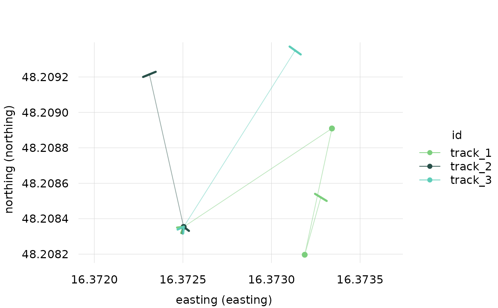
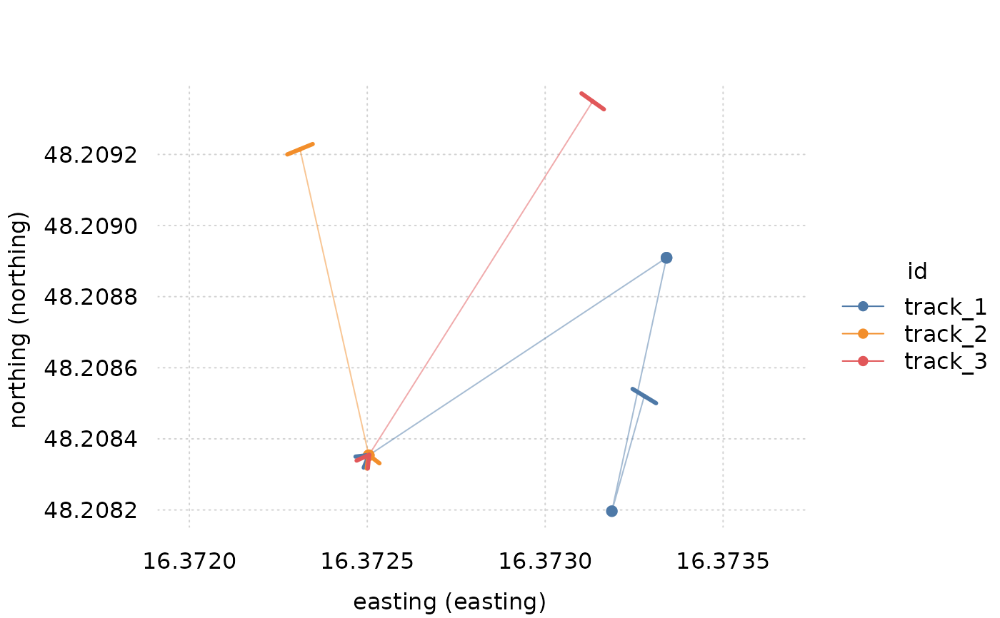
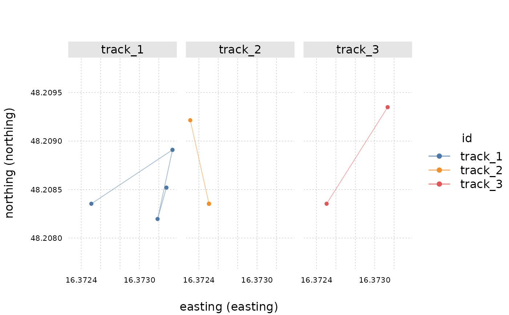
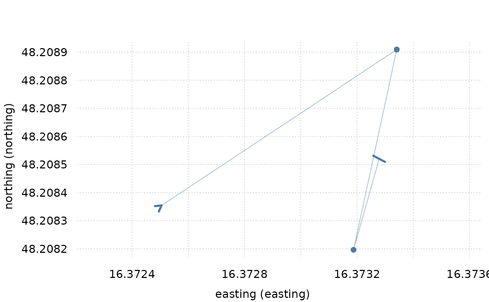
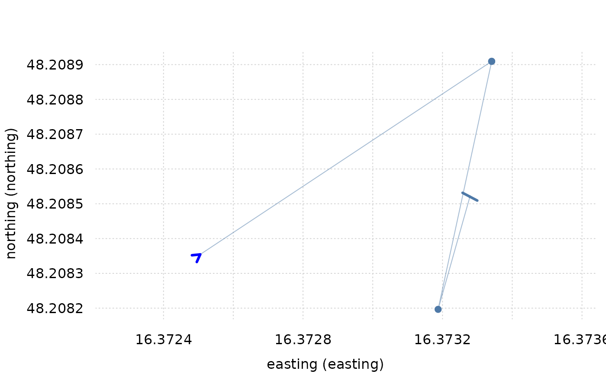

Plots coordinates of objects of class trackframe based on
tinyplot functionality.
Usage
# S3 method for class 'trackframe'
plot(
x,
lines = TRUE,
lines_style = list(alpha = 0.5),
points = TRUE,
points_style = list(pch = 19),
start_indicator = TRUE,
start_indicator_style = list(arrowhead_loc = 0.001, length = 0.1, lwd = 3),
end_indicator = TRUE,
end_indicator_style = list(arrowhead_loc = 0.001, length = 0.1, code = 1, angle = 90,
lwd = 3),
marker = NULL,
marker_style = list(pch = 22, col = "black", cex = 2),
facet = FALSE,
facet.args = list(),
theme = NULL,
xlab = sprintf("easting (%s)", easting_col(x)),
ylab = sprintf("northing (%s)", northing_col(x)),
asp = 1,
...
)Arguments
- x
an object of class
trackframe- lines
logical should lines be plotted?
- lines_style
list of graphical parameters passed to
tinyplot::tinyplot()when plotting lines- points
logical should points be plotted?
- points_style
graphical parameters passed to
tinyplot::tinyplot()when plotting points- start_indicator
logical indicator if arrows indicating start point of each track should be added
- start_indicator_style
list of graphical parameters for start indicator. See section 'x_indicator_style'.
- end_indicator
logical indicator if arrows indicating endpoint of each track should be added
- end_indicator_style
list of graphical parameters for end indicator. See section 'x_indicator_style'.
- marker
character column name of logical column indicating which points to mark
- marker_style
list of graphical parameters passed to
tinyplotas markers are being drawn- facet
logical should the plot be facetted by track?
- facet.args
list of arguments controlling facet behavior. If
ncolis unspecified, an attempt is made chose a visually pleasing value. Seetinyplot- theme
character or list:
NULL(default): Use currently settinyplottheme if one is set. Otherwise use trackframe default.a string naming a built-in tinyplot theme
vignette("themes", package = "tinyplot")ora list of graphical parameters defining a custom theme
- xlab
a title for the x axis
- ylab
a title for the x axis
- asp
numeric y/x aspect ratio
- ...
additional graphical parameters passed to
tinyplot
x_style
The arguments lines_style, points_style,
start_indicator_style, end_indicator_style and marker_style each take
list of argments passed to tinyplotto style the corresponding element.
Possible arguments can come from:
Parameters in ... can come from the same lists and are applied to
the entire plot.
x_indicator_style
Start/end indicators are arrows that point from the start/endpoint of each track
toward the second/penultimate point.
In addition to standard arrow paramenters,
start_indicator_style and end_indicator_style can have a key: arrowhead_loc
which controls how far along the first/last segment the arrow extends.
0 refering to putting the arrow having the head only.
and 1 referring to having the arrow extend to second/penultimate point.
.001 inch is added to the user-provided value to ensure arrow direction
can be determined.
Note: Because end arrows go from the endpoint toward the penultimate point,
the graphics::arrows() default of angle = 30, code = 2 will
result in arrows pointing against the direction of travel.
Examples
library(trackframe)
data("tf_mini", package = "trackframe")
data <- tf_mini
class(data)
#> [1] "trackframe" "data.frame"
plot(data)

# set different theme
library(tinyplot)
tinytheme("clean2")
plot(data)
 plot(data)
plot(data)

# with facets and no indicator arrows
plot(
data,
facet = TRUE,
start_indicator = FALSE,
end_indicator = FALSE
)

# allow free y axis
plot(data, facet.args = list("free" = TRUE))
 track_1 <- select_id(data, "track_1")
plot(track_1)
track_1 <- select_id(data, "track_1")
plot(track_1)

plot(track_1, direction = TRUE)
 # Customize start/stop arrows
plot(track_1, start_indicator_style = list(col = "blue"))
# Customize start/stop arrows
plot(track_1, start_indicator_style = list(col = "blue"))
